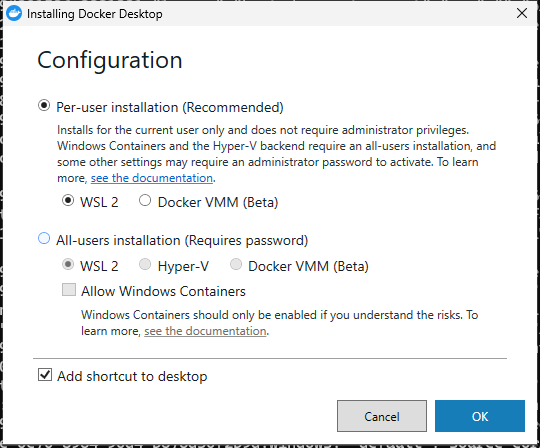
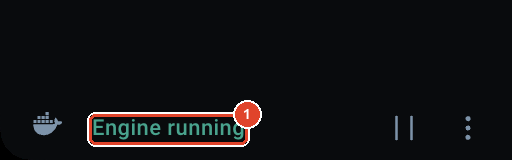
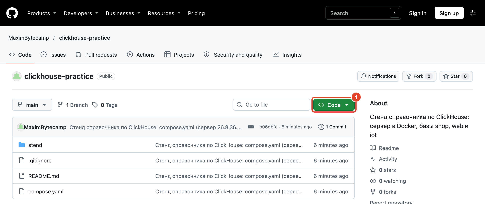
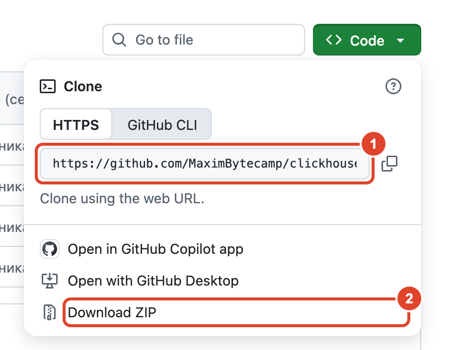
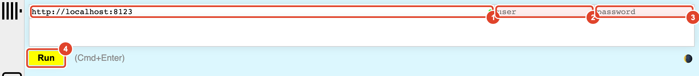
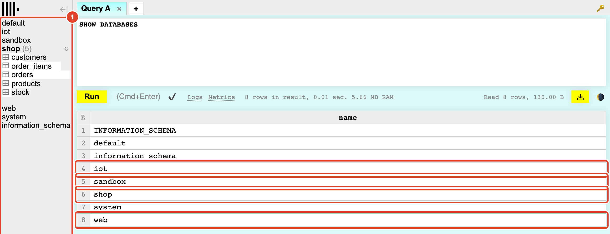
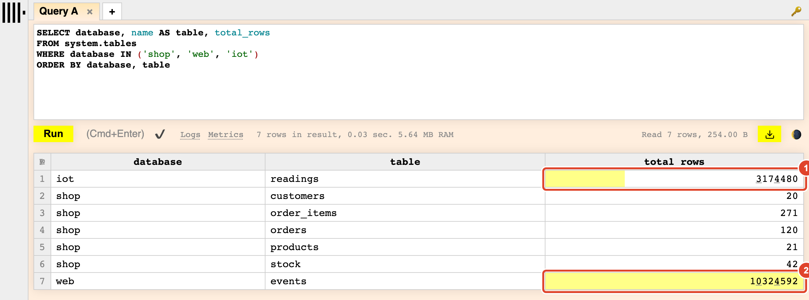
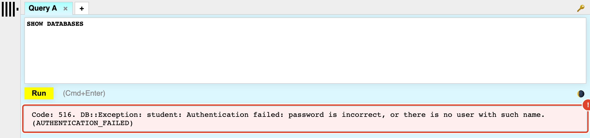

Стенд
Сервер ClickHouse с заранее загруженными данными, одинаковый у всех. На нём выполняются примеры книги.
Примерконтейнер course-clickhouse с базами shop, web, iot и sandbox.
Гдеглава 0.1
Справочник по ClickHouse · модуль 0 · рабочее место
Глава 0.1
Все запросы, числа и кадры справочника получены на одном сервере ClickHouse с тремя базами. В этой главе вы поднимете у себя такой же сервер одной командой, проверите, что базы загрузились, и откроете их в браузере и в терминале. Главу проходят один раз, до первых запросов.
github.com/MaximBytecamp/clickhouse-practice — стенд и базы
В лаборатории у всех студентов одинаковые приборы и реактивы, поэтому результат опыта можно сверить с учебником. Стенд играет ту же роль: это сервер ClickHouse с заранее загруженными данными, на котором выполняются все примеры книги. У каждого студента он одинаковый: та же версия сервера, те же таблицы, те же строки. Поэтому запрос из главы даёт у вас то же число, что напечатано в книге. Если число другое, ошибка в запросе: данные у всех одни и те же.
Сервер ClickHouse выпускается для Linux и macOS. Для Windows отдельной сборки нет. Поэтому стенд запускается в Docker — программе, которая запускает другие программы в изолированных «коробках» со своей маленькой системой Linux внутри. Такая коробка называется контейнером. Контейнер одинаково работает на Windows, macOS и Linux: Docker сам предоставляет ему Linux, даже если на компьютере Windows.
Контейнер создаётся из образа — готового шаблона, в котором уже лежит программа со всем нужным для работы. Образ похож на установочный диск, а контейнер — на программу, установленную с этого диска и запущенную. Из одного образа можно создать несколько контейнеров. Стенд использует официальный образ сервера clickhouse/clickhouse-server:26.8.36.3. Версия в имени записана до последней цифры, поэтому у всех запускается один и тот же сервер.
Рисунок показывает, что делает Docker на любой из трёх систем и как образ связан с контейнером.
Слева — три системы, на которых может работать студент. Все три стрелки сходятся в Docker: он предоставляет контейнеру Linux, поэтому дальше картина одинаковая. Справа сверху — образ, светлая коробка: он хранится на диске и не меняется. Стрелка вниз — запуск. Тёмная коробка — контейнер, созданный из образа, в нём и работает сервер. Следовательно, у всех студентов сервер один и тот же, независимо от системы. Осталось понять, из каких частей состоит стенд и кто к кому обращается.
Весь стенд описан в одном файле — compose.yaml в корне репозитория. Docker читает этот файл и поднимает всё, что в нём перечислено, одной командой. Ниже — схема: что окажется на компьютере после запуска и кто к кому обращается.
docker compose и clickhouse-clientDocker · проект clickhouse-practice
том clickhouse-data — файлы баз; переживает остановку и удаление контейнеров
Схема читается сверху вниз. В тёмной полосе — ваш компьютер. Под ней пунктиром обведены программы, которыми вы будете работать с сервером: браузер, терминал и собственный код. Ниже — то, что запускает Docker. Контейнеров два. course-clickhouse — это сам сервер. Мигающий квадратик у имени означает, что он работает всё время, пока стенд поднят. seed — разовый загрузчик. Он заполняет пустой сервер данными и завершается, поэтому его метка серая.
Нижняя строка — том. Его можно сравнить с флешкой: компьютер меняют, а файлы остаются на флешке. Том — это папка, которую Docker хранит отдельно от контейнера, и в ней лежат файлы баз. Контейнер можно остановить, удалить и создать заново, а том остаётся вместе с данными. Подписи localhost:8123 и localhost:9000 — адреса, по которым программы на компьютере обращаются к серверу в контейнере. Чтобы всё это заработало, нужен сам Docker.

Docker.dmg и перетащите Docker в «Программы».curl -fsSL https://get.docker.com -o get-docker.sh sudo sh get-docker.sh sudo usermod -aG docker $USER
docker. Без нового входа она не действует, и каждую команду пришлось бы начинать с sudo.
Проверьте, что Docker отвечает. Команда docker version печатает версии двух частей Docker:
docker version
Client: Version: 29.7.2 API version: 1.55 Go version: go1.26.5 Git commit: a7dcaa6 Built: Wed Aug 5 18:27:50 2026 OS/Arch: darwin/arm64 Context: desktop-linux Server: Docker Desktop 4.89.0 (238018) Engine: Version: 29.7.2 API version: 1.55 (minimum version 1.40) Go version: go1.26.5 Git commit: 6a43e3d Built: Wed Aug 5 18:28:35 2026 OS/Arch: linux/arm64 Experimental: false containerd: Version: v2.3.3 …
В ответе два блока. Client — сама команда docker, которую вы набираете в терминале. Server — движок, который создаёт и запускает контейнеры. Строки OS/Arch у них разные: у клиента darwin/arm64 (это macOS), у движка linux/arm64. Это и есть тот Linux, который Docker предоставляет контейнерам на любой системе. Если блока Server нет и вместо него ошибка подключения, движок не запущен: запустите Docker Desktop и дождитесь Engine running. Когда оба блока на месте, можно скачивать стенд.
Описание стенда и данные для загрузки лежат в репозитории clickhouse-practice на GitHub. Его нужно скачать к себе — в любую папку, где вы держите учебные проекты.

git clone. Если Git нет — нажмите Download ZIP (рамка 2) и распакуйте архив.

compose.yaml.git clone https://github.com/MaximBytecamp/clickhouse-practice.git cd clickhouse-practice
cd $HOME\Downloads\clickhouse-practice-main\clickhouse-practice-main
cd ~/Downloads/clickhouse-practice-main
У архива с GitHub к имени папки добавляется название ветки — -main. На Windows «Извлечь всё» вдобавок кладёт папку в папку с тем же именем, поэтому в пути она встречается дважды. Проверить, что вы на месте, можно командой ls (на Windows работает и dir): в списке должны быть compose.yaml, README.md и папка stend. Из этой папки и поднимается стенд.
docker compose up -d
docker compose — команда Docker, которая работает с файлом compose.yaml. up означает «поднять всё, что описано в файле». Флаг -d означает «в фоне»: контейнеры продолжат работать, а терминал освободится для следующих команд. Первый запуск дольше: сначала Docker скачивает образ сервера, около 270 МБ. Когда всё поднялось, вывод заканчивается так:
✔ Volume clickhouse-practice_clickhouse-data Created 0.0s ✔ Network clickhouse-practice_default Created 0.0s ✔ Container course-clickhouse Created 0.2s ✔ Container clickhouse-practice-seed-1 Created 0.2s ✔ Container course-clickhouse Healthy 10.9s ✔ Container clickhouse-practice-seed-1 Started 10.9s
За этими шестью строками — четыре события, и каждое начинается только после предыдущего. Ниже они показаны по одному.
Первый столбец — образ: его Docker скачивает один раз, при следующих запусках берёт с диска. Второй — том и сеть: строки Volume … Created и Network … Created. Сеть нужна, чтобы контейнеры обращались друг к другу по имени: загрузчик находит сервер по адресу clickhouse. Третий — сервер: Docker создаёт контейнер course-clickhouse, запускает его и раз в 3 секунды выполняет в нём проверочный запрос SELECT 1. Пока сервер не ответил, он «не готов»; первый ответ даёт статус Healthy — «здоров», у нас он пришёл через 10,9 секунды. Четвёртый — загрузчик seed: он стартует только после Healthy, потому что загружать данные в неготовый сервер бессмысленно.
Строка Started у загрузчика означает только запуск: сама загрузка идёт в фоне ещё 20–30 секунд. Что он сделал, видно в его журнале:
docker compose logs seed
seed-1 | shop.products 21 строк seed-1 | shop.stock 42 строк seed-1 | shop.customers 20 строк seed-1 | shop.orders 120 строк seed-1 | shop.order_items 271 строк seed-1 | web.events: генерация, около минуты… seed-1 | web.events 10324592 строк seed-1 | iot.readings: генерация… seed-1 | iot.readings 3174480 строк seed-1 | Готово: базы shop, web, iot и пустая sandbox
Загрузка закончена, когда последняя строка — «Готово». Пока её нет, подождите и повторите команду. Состояние контейнеров показывает docker compose ps:
docker compose ps
NAME SERVICE CREATED STATUS PORTS course-clickhouse clickhouse 53 seconds ago Up 52 seconds (healthy) 0.0.0.0:8123->8123/tcp, 0.0.0.0:9000->9000/tcp
Контейнер остался один — сервер. Загрузчик сделал работу и завершился, поэтому в списке его нет. В столбце STATUS видно, сколько сервер работает и что он healthy. В столбце PORTS — два открытых порта: 8123 и 9000. Запись 0.0.0.0:8123->8123 читается так: «порт 8123 компьютера ведёт в порт 8123 контейнера».
При следующем docker compose up -d загрузчик проверит таблицу shop.orders. Заказы в ней уже есть, поэтому он напишет «Базы уже загружены» и ничего не изменит. Всё, что вы создадите в своих упражнениях, переживает перезапуск стенда. Теперь посмотрим, что загрузилось.
На сервере оказались четыре базы. Три — эталонные: на них построены все примеры книги, и числа в главах посчитаны по ним. Четвёртая, sandbox, пустая: это песочница для упражнений, в ней создают таблицы, вставляют и удаляют строки.
| База | Таблица | Строк | Что внутри |
|---|---|---|---|
shop | products | 21 | Магазин электроники: товары, остатки на складах, покупатели, заказы и позиции заказов. Тот же магазин, что в справочнике по MongoDB, только каждый заказ разложен на строку заказа и строки позиций. На ней — первые запросы, модули 1–2 |
stock | 42 | ||
customers | 20 | ||
orders | 120 | ||
order_items | 271 | ||
web | events | 10 324 592 | Действия посетителей сайта того же магазина с 1 августа по 31 октября 2026 года: просмотры страниц, поиск, корзина, оформление, покупка. Каждая строка — одно действие. На ней видна скорость ClickHouse и строится аналитика |
iot | readings | 3 174 480 | Замеры температуры и влажности на четырёх складах, раз в минуту за те же три месяца. Для временных рядов и сроков хранения данных |
sandbox | — | — | Пустая база для упражнений |
Таблицы web.events и iot.readings не хранятся в репозитории готовыми файлами — это были бы сотни мегабайт. Загрузчик вычисляет их строки прямо на сервере: каждое значение получается из номера строки по формуле, поэтому результат у всех одинаковый до последней цифры. Проверить, что числа сошлись, проще всего в браузере.
Сервер ClickHouse сам отдаёт простую веб-страницу для запросов — Play UI. Ставить для неё ничего не нужно: достаточно браузера.
Делаемhttp://localhost:8123. Впишите пользователя student и пароль student.

SHOW DATABASES и нажмите Run (4) или Ctrl + Enter (на Mac — Cmd + Enter). Значок с базами слева открывает их список; щелчок по базе показывает её таблицы.

SELECT database, name AS table, total_rows
FROM system.tables
WHERE database IN ('shop', 'web', 'iot')
ORDER BY database, table
SHOW DATABASES вернул восемь строк. Четыре из них — базы стенда (iot, sandbox, shop, web, на кадре в рамках). Остальные четыре — служебные, они есть на любом сервере ClickHouse. system хранит сведения о самом сервере. default — база по умолчанию. INFORMATION_SCHEMA и information_schema — стандартное описание таблиц, как в других базах данных SQL. Над таблицей результата Play UI пишет, сколько строк вернулось и за сколько секунд: 8 rows in result, 0.01 sec.
Третий запрос — проверочный, сейчас нужен только его результат. Он берёт из служебной базы system список таблиц стенда и для каждой показывает число строк total_rows. Сверьте два самых больших числа (рамки 1 и 2): 3174480 у iot.readings и 10324592 у web.events. Жёлтые полосы в этом столбце Play UI рисует сам — длина полосы показывает величину числа. Если числа совпали с таблицей из §6, стенд готов. Те же запросы можно выполнять и без браузера — в терминале.
Второй способ работать с сервером — clickhouse-client, программа для запросов в терминале. Ставить её тоже не нужно: она уже лежит в контейнере сервера, и Docker запускает её там.
Делаемdocker compose exec clickhouse clickhouse-client
После приглашения course :) наберите SHOW DATABASES и нажмите Enter, затем SELECT count() FROM web.events, затем exit. Так выглядит весь сеанс:
ClickHouse client version 26.8.36.3 (official build). Connecting to localhost:9000 as user student. Connected to ClickHouse server version 26.8.36. Warnings: * Delay accounting is not enabled, OSIOWaitMicroseconds will not be gathered. You can enable it using `sudo sh -c 'echo 1 > /proc/sys/kernel/task_delayacct'` or by using sysctl. * Linux transparent hugepages are set to "always". Check /sys/kernel/mm/transparent_hugepage/enabled course :) SHOW DATABASES SHOW DATABASES Query id: 2110de2e-e6f7-42e6-b51b-2b11fa513ab4 ┌─name───────────────┐ 1. │ INFORMATION_SCHEMA │ 2. │ default │ 3. │ information_schema │ 4. │ iot │ 5. │ sandbox │ 6. │ shop │ 7. │ system │ 8. │ web │ └────────────────────┘ 8 rows in set. Elapsed: 0.006 sec. course :) SELECT count() FROM web.events SELECT count() FROM web.events Query id: d045ac73-50b0-4b58-9a24-47974f87a685 ┌──count()─┐ 1. │ 10324592 │ -- 10.32 million └──────────┘ 1 row in set. Elapsed: 0.014 sec. course :) exit Bye.
Перед разбором сеанса — рисунок: какой путь проходит команда docker compose exec и где в итоге работает клиент.
Слева — ваш терминал, в нём набрана команда. Docker (жёлтый блок) находит контейнер сервера и запускает программу внутри него. Поэтому clickhouse-client оказывается в тёмной области рядом с сервером. С сервером он соединяется через порт 9000 — круглую метку между ними. Подпись внизу объясняет, почему в приветствии клиента стоит localhost: для программы внутри контейнера «этот компьютер» — сам контейнер.
Сама команда состоит из трёх частей. docker compose exec означает «выполнить программу внутри работающего контейнера». clickhouse — имя сервиса из compose.yaml, то есть контейнер сервера. clickhouse-client — программа, которую нужно запустить. Пользователь и пароль набирать не нужно: стенд положил их в настройки клиента внутри контейнера.
Первые три строки сообщают версии клиента и сервера и под каким пользователем выполнен вход — student. Адрес localhost:9000 здесь означает «этот же контейнер»: клиент запущен рядом с сервером. Блок Warnings — два предупреждения о настройках ядра Linux внутри Docker. Первое сообщает, что сервер не собирает одну из метрик ожидания диска. Второе — о режиме крупных страниц памяти. На стенде они ни на что не влияют и появляются при каждом входе.
Приглашение course :) — имя сервера и смайлик: после него вводится запрос. Набранный запрос клиент сначала повторяет в аккуратном виде, затем печатает Query id — уникальный номер запроса, по которому его потом можно найти в журнале сервера. Ниже — сам результат в рамке, число строк и время выполнения. Пересчёт всех 10,3 миллиона строк web.events занял 0,014 секунды. Пометку -- 10.32 million клиент добавляет к большим числам сам, чтобы их было легче прочитать. exit закрывает клиент, а сервер продолжает работать. Остаётся разобраться, как запросы из браузера попадают в контейнер снаружи.
Сервер работает внутри контейнера, а браузер — на вашем компьютере, снаружи. Рисунок показывает путь запроса из Play UI до таблицы и обратно. Так же ходят запросы ваших программ.
Номера на стрелках — шаги. (1) Браузер отправляет запрос на адрес localhost:8123, то есть на порт 8123 вашего же компьютера. Порт — номер «двери», через которую программа принимает соединения; у одного компьютера их тысячи, и каждая программа слушает свою. (2) Docker держит эту дверь открытой и передаёт всё, что в неё пришло, в порт 8123 контейнера. Это называется проброс порта. Его и описывает запись 0.0.0.0:8123->8123 из docker compose ps. (3) Внутри контейнера порт 8123 слушает сервер ClickHouse. (4) Сервер читает нужные столбцы из файлов на томе. (5) Результат возвращается тем же путём — пунктирная стрелка.
Портов у сервера два, и они нужны разным клиентам. 8123 — HTTP, тот же протокол, что у веб-страниц. Через него работают браузер с Play UI и драйверы Python и Ruby. 9000 — собственный двоичный протокол ClickHouse. Им пользуются clickhouse-client и драйверы Go и C++. Сервер и данные одни и те же, различается только способ доставки запроса. Когда стенд работает, нужно уметь его сбросить и остановить.
Четыре команды покрывают всю жизнь стенда. Все выполняются из папки репозитория.
| Команда | Что делает | Что с данными |
|---|---|---|
docker compose run --rm reset | Заново загружает базы shop, web, iot и очищает sandbox; около 25 секунд | Эталонные базы — как при первом запуске, упражнения в sandbox стираются |
docker compose stop | Останавливает сервер, контейнер остаётся | Сохраняются. Запуск — docker compose up -d |
docker compose down | Останавливает и удаляет контейнеры и сеть | Сохраняются: том не удаляется |
docker compose down -v | То же и удаляет том | Удаляются. Следующий up -d загрузит базы заново |
В reset слово run означает «запустить разовую задачу», а --rm — удалить её контейнер сразу после окончания, чтобы они не копились. Сбрасывать базы нужно, если после упражнения числа перестали совпадать с книгой. Флаг -v у down — от слова volume, «том». Он стирает файлы баз. Применяйте его, когда стенд больше не нужен или вы хотите начать с чистого листа:
Container course-clickhouse Stopping Container course-clickhouse Stopped Container course-clickhouse Removing Container course-clickhouse Removed Volume clickhouse-practice_clickhouse-data Removing Network clickhouse-practice_default Removing Network clickhouse-practice_default Removed Volume clickhouse-practice_clickhouse-data Removed
Рисунок показывает размеры в масштабе: полосы одной шкалы, от 0 до 1,4 ГБ.
Первые три полосы — то, что стенд занимает на диске: образ (жёлтая) и том (розовые). Сразу после загрузки том почти вдвое больше: сервер удаляет промежуточные файлы загрузки через несколько минут. Две нижние полосы сравнивают одну таблицу. Тёмная — сколько web.events занимает на диске, пунктирная — сколько заняли бы те же 10,3 миллиона строк без сжатия. Разница почти в четыре раза.
Отсюда правило: закладывайте под стенд 3 ГБ свободного места.
Памяти сервер в покое берёт около 700 МБ, загрузка баз добавляет до 460 МБ. Стенду хватает 2 ГБ памяти, выделенных Docker. Сколько памяти занимает сервер прямо сейчас, показывает docker stats course-clickhouse. Выход из неё — Ctrl + C. Если что-то из этой главы пошло не так, ответ, скорее всего, в таблице ниже.
| Что происходит | Что видно | В чём дело |
|---|---|---|
| Docker Desktop не запущен | error during connect: … open //./pipe/dockerDesktopLinuxEngine: The system cannot find the file specified. | Команда docker есть, движка нет. Запустите Docker Desktop и дождитесь Engine running. Не запускается — глава 0.1а |
| Docker Desktop не запущен | failed to connect to the docker API at unix:///Users/…/.docker/run/docker.sock; check if the path is correct and if the daemon is running | Команда docker есть, движка нет. Запустите Docker Desktop из «Программ» и дождитесь Engine running |
| Служба Docker не запущена | failed to connect to the docker API at unix:///var/run/docker.sock; check if the path is correct and if the daemon is running | sudo systemctl start docker; чтобы стартовала вместе с системой — sudo systemctl enable docker |
| Терминал открыт до установки Docker | docker : The term 'docker' is not recognized as the name of a cmdlet… | Закройте PowerShell и откройте заново: новый путь к программе подхватывается только новым окном |
| Docker Desktop ни разу не запускался | zsh: command not found: docker | Команду docker в систему добавляет первый запуск Docker Desktop. Запустите его и откройте новое окно терминала |
Пользователь не в группе docker | permission denied while trying to connect to the docker API at unix:///var/run/docker.sock | Выполните sudo usermod -aG docker $USER, выйдите из системы и войдите снова |
| Команда выполнена не в той папке | no configuration file provided: not found | Docker ищет compose.yaml в текущей папке. Перейдите в папку репозитория, §4 |
| Стенд поднят второй раз из другой папки | Conflict. The container name "/course-clickhouse" is already in use by container "201c6972…". You have to remove (or rename) that container to be able to reuse that name. | Репозиторий скачан дважды, и первый стенд ещё работает. Остановите его из его папки (docker compose down) или работайте в той же папке, что и раньше |
| Порт 8123 или 9000 занят другой программой | ports are not available: exposing port TCP 0.0.0.0:8123 -> 127.0.0.1:0: listen tcp 0.0.0.0:8123: bind: address already in use (снято на macOS; на Windows конец сообщения — Only one usage of each socket address … is normally permitted) | Порт 9000 занимают, например, PHP-FPM и MinIO. Создайте рядом с compose.yaml файл .env со строкой NATIVE_PORT=9001 (или HTTP_PORT=8124) и снова docker compose up -d. Адреса в книге тогда меняются на ваш порт |
| Запрос выполнен, пока загрузка не закончилась | SELECT count() FROM web.events возвращает 0 или число меньше 10324592 | Таблица уже создана, а строки ещё вычисляются. Дождитесь «Готово» в docker compose logs seed |
| Неверный пароль в Play UI | Code: 516. DB::Exception: student: Authentication failed: password is incorrect, or there is no user with such name. (AUTHENTICATION_FAILED) | Пароль student — строчными латинскими буквами. Ключик справа вверху Play UI снова открывает поля входа |
| Клиент запущен при остановленном сервере | service "clickhouse" is not running | Стенд остановлен командой stop или после перезагрузки компьютера. docker compose up -d |

На кадре — как выглядит ошибка входа в Play UI: красная рамка под кнопкой Run вместо таблицы результата. У каждой ошибки ClickHouse есть номер (Code: 516) и имя в скобках (AUTHENTICATION_FAILED). По имени ошибку находят в документации и в интернете.
Образ — неизменный шаблон с программой, его скачивают один раз. Контейнер — запущенная копия, созданная из образа; у него своё состояние, его можно остановить и удалить. Из образа clickhouse/clickhouse-server:26.8.36.3 стенд создаёт контейнер course-clickhouse, а загрузчик seed — второй контейнер из того же образа.
docker compose down и снова up -d упражнения в sandbox пропадут?Нет. down удаляет контейнеры, том остаётся, а данные лежат в нём. Новый контейнер подключит тот же том, а загрузчик увидит, что базы уже есть, и ничего не тронет. Данные стирают только down -v и reset.
seed не стартует одновременно с сервером?В compose.yaml загрузчик запускается только после статуса Healthy — когда сервер ответил на проверочный запрос. Сразу после запуска контейнера сервер ещё не принимает запросы, и загрузка упала бы с ошибкой подключения.
Один. Play UI приходит к нему через порт 8123 по протоколу HTTP, clickhouse-client — через порт 9000 по собственному протоколу ClickHouse. Сервер, базы и данные те же.
git clone https://github.com/
MaximBytecamp/clickhouse-practice.git
cd clickhouse-practice
docker compose up -d
docker compose logs seed # «Готово»
docker compose ps # healthy
http://localhost:8123/play
student / student
docker compose exec clickhouse clickhouse-client
docker compose run --rm reset
docker compose down # данные остаются
docker compose down -v # и данные удаляются
Термины главы: формулировка, пример и рисунок.
Сервер ClickHouse с заранее загруженными данными, одинаковый у всех. На нём выполняются примеры книги.
Примерконтейнер course-clickhouse с базами shop, web, iot и sandbox.
Гдеглава 0.1
Программа, которая запускает другие программы в изолированных контейнерах со своей системой Linux внутри. Работает на Windows, macOS и Linux одинаково.
Примерdocker version показывает клиента (darwin/arm64) и движок (linux/arm64).
Где§1, §3
Неизменный шаблон, в котором лежит программа со всем нужным для её работы. Скачивается один раз, из него создаются контейнеры.
Примерclickhouse/clickhouse-server:26.8.36.3, около 270 МБ при скачивании.
Где§1, §5
Запущенная копия программы из образа, отделённая от остальной системы. Его можно остановить, удалить и создать заново.
Примерcourse-clickhouse — сервер, работает всё время; seed — загрузчик, завершается сам.
Где§1, §2, §5
Папка с данными, которую Docker хранит отдельно от контейнера. Переживает остановку и удаление контейнера; стирается только явно.
Примерclickhouse-practice_clickhouse-data — файлы всех баз стенда; удаляется командой docker compose down -v.
Где§2, §10
Часть Docker, которая поднимает несколько контейнеров по описанию из файла compose.yaml: какие образы, порты, тома и в каком порядке.
Примерdocker compose up -d — поднять стенд, docker compose ps — что работает.
Где§2, §5, §10
Команда, которую Docker регулярно выполняет в контейнере, чтобы узнать, готова ли программа работать. Первый успешный ответ даёт статус healthy.
Примерраз в 3 секунды SELECT 1; у нас Healthy пришёл через 10,9 секунды.
Где§5
Порт — номер, по которому программа принимает соединения. Проброс — правило Docker: соединения на порт компьютера передаются в порт контейнера.
Пример0.0.0.0:8123->8123/tcp — порт 8123 компьютера ведёт в порт 8123 контейнера.
Где§5, §9
Веб-страница для SQL-запросов, встроенная в сервер ClickHouse. Работает в браузере, ставить ничего не нужно.
Примерhttp://localhost:8123/play, вход student / student.
Где§7
Программа для SQL-запросов в терминале. Подключается к серверу по порту 9000 и печатает результат таблицей в рамке.
Примерdocker compose exec clickhouse clickhouse-client, приглашение course :), выход — exit.
Где§8
Стенд — это сервер ClickHouse 26.8 в контейнере Docker с базами shop, web, iot и песочницей sandbox. Его поднимает команда docker compose up -d из папки репозитория, базы загружает разовый контейнер seed, а данные лежат в томе и переживают перезапуск. К серверу можно обратиться из браузера через Play UI на порту 8123 и из терминала через clickhouse-client на порту 9000. Проверка готовности — число строк: 10 324 592 в web.events и 3 174 480 в iot.readings. Если на Windows Docker Desktop не запускается, следующая глава — 0.1а; если всё работает, переходите к главе 0.2 о клиентах.